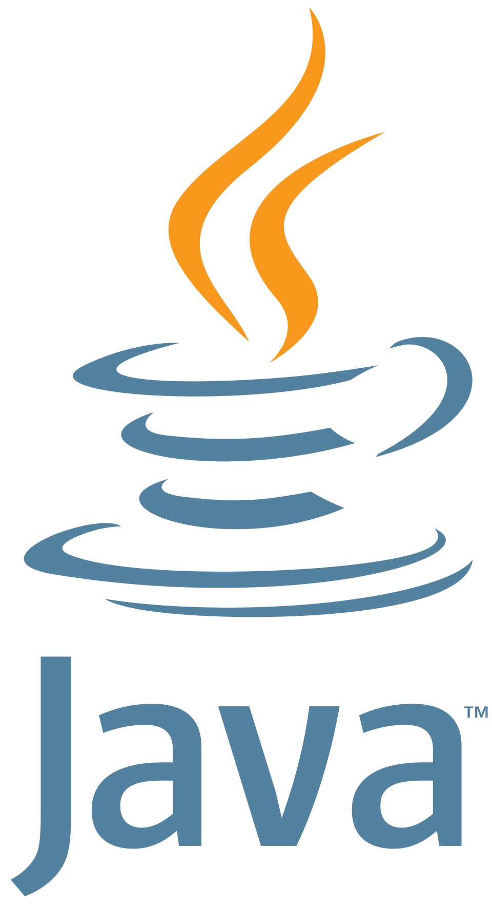
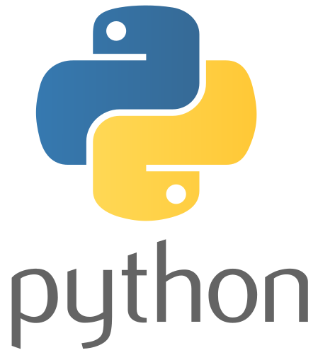

À propos de moi
Actuellement en première année de BUT Informatique à l'IUT2 de Grenoble. Mon interet pour l'informatique a commencé au lycée avec la spécialité NSI (numérique et science de l'informatique), depuis je souhaite m'orienter et me spécialiser dans la cybersécurité.
- Comptétences


- Formations
Experiences personnelles
Bêta-Testeur d'une application type discord - Vacua
J'ai participé au bêta-test de l'application Vacua qui est une plateforme de communication par texte, audio et vidéo. Le ro^le de bêta-testeur était de rapporter les bugs rencontrés lors de tests, ainsi que de proposer des améliorations UI/UX pour une meilleure experience utilisateur.